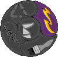

Kalastus
Onkiminen
Taso 1
Tarpoja kalastaa ongella, perkaa saaliinsa ja valmistaa saaliista aterian.
Tarpoja oppii hankkimaan ruokaa kalastamalla ja oppii, kuinka kalasta saa ruokaa.
Vartionjohtajan ohje
Tämän voi suorittaa myös arki-iltana, jos on mahdollista.

Pakollinen
90 Kesto: 90 min / kokous
30 Valmisteluaika: 30 min
Ulkona
Leirillä
Yksilötehtävä
Tarvikkeet:
mato-onki ja matoja
mato-onki ja matoja
Vinkit (2kpl)
Lajittele vinkit: Uusin Suosituin
Suomen partio
26.3.2014
Vapaaehtoinen otsikko
Tämä on mallivinkki. Lopullisessa versiossa tähän voidaan liittää helposti kuvia tai esimerkiksi videoita Youtubesta.

3kpl
Nimimerkki
5.3.2014
Tämä on mallivinkki. Lopullisessa versiossa tähän voidaan liittää helposti kuvia tai esimerkiksi videoita Youtubesta.
2kpl
Tarppo
Tarpon muut saman tason aktiviteetit:
Taitoalueet